Concepts¶
This page explains how to think about a drawing things in Blogo.
Cross Sections¶
Blogo commands control the movement of a cross section. The most simple cross section is a square:
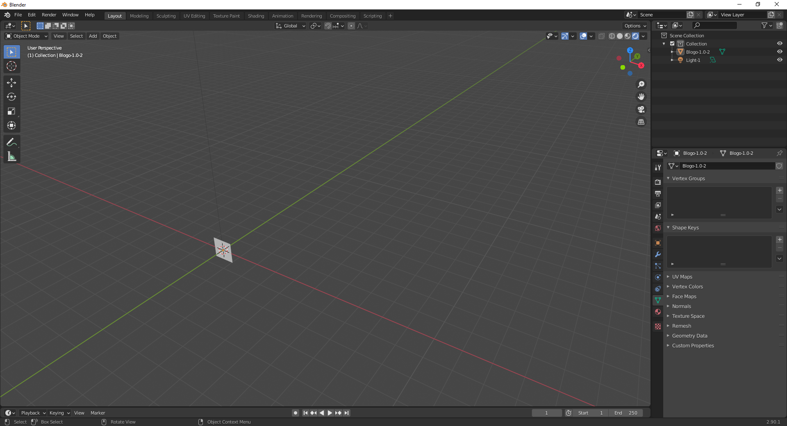If a forward command is given, then this square is moved foward, leaving a trail behind to construct a cuboid:
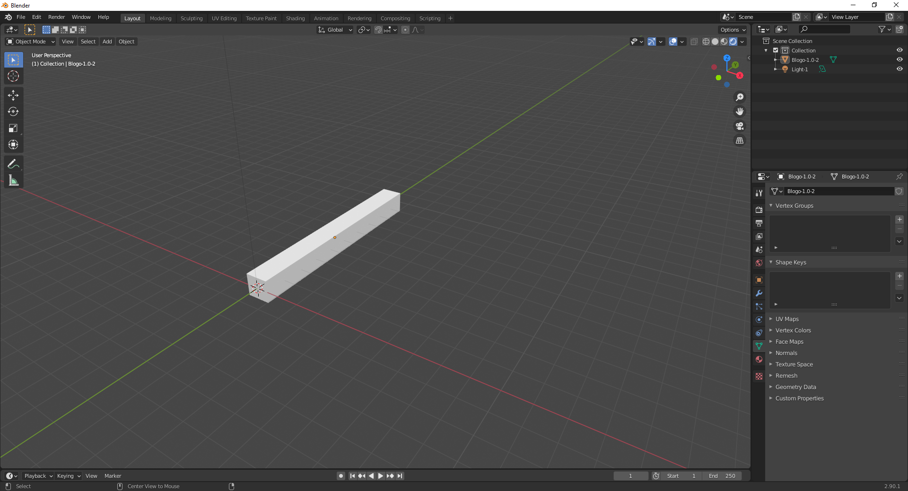The cross section can be any shape, such as the more complicated I shape shown below. This image also demonstates the shape going forward, then right by 90° and then forward again.
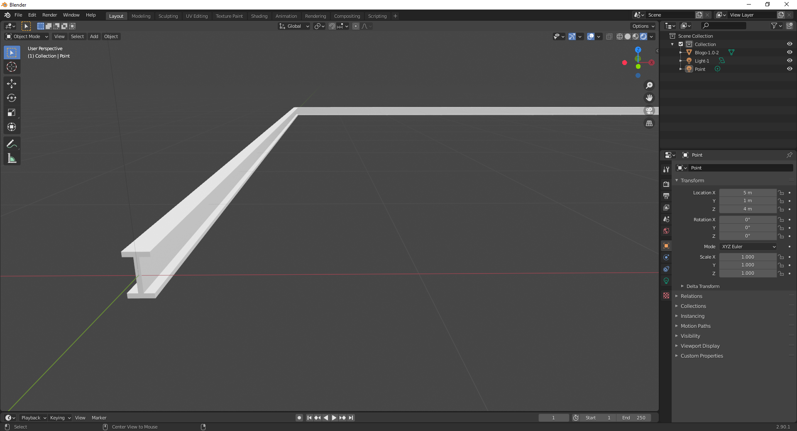Pen Up and Down¶
A trail is only left behind when the pen is down. If we lift the pen up, we can leave gaps:
turtle.fd(2)
turtle.pen_up()
turtle.fd(2)
turtle.pen_down()
turtle.fd(2)
turtle.pen_up()
turtle.fd(2)
turtle.pen_down()
turtle.fd(2)
produces:
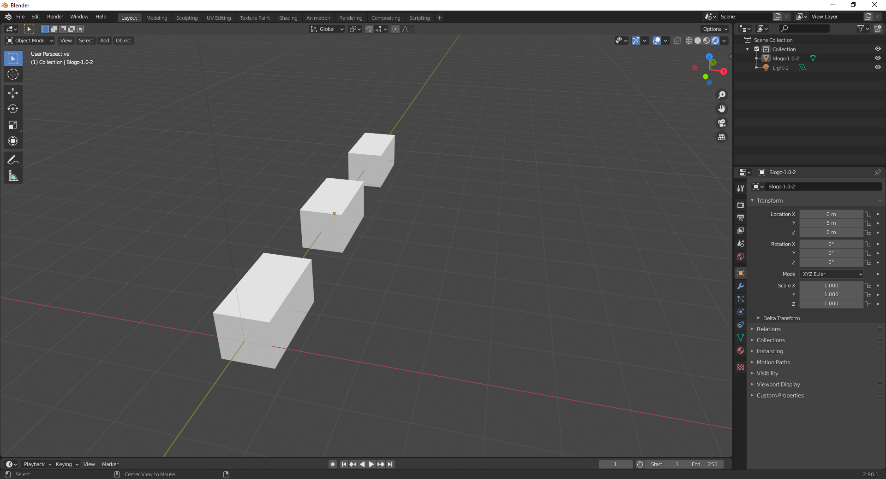The Third Dimension¶
As well as moving the trail left and right, it can go up and down as well:
turtle.fd(5)
turtle.rt(90)
turtle.fd(5)
turtle.up(90)
turtle.fd(5)
turtle.down(90)
turtle.fd(5)
to produce:
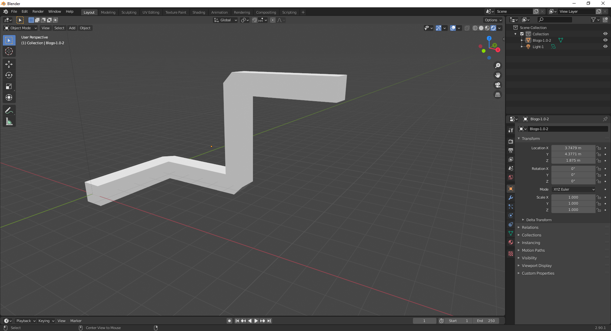Rotating¶
The cross section can be rotated (which will change which way is up):
turtle.fd(1)
turtle.clockwise(22.5)
turtle.fd(1)
turtle.clockwise(22.5)
turtle.fd(1)
turtle.clockwise(22.5)
turtle.fd(1)
turtle.clockwise(22.5)
turtle.fd(1)
with an I-beam cross section, gives:
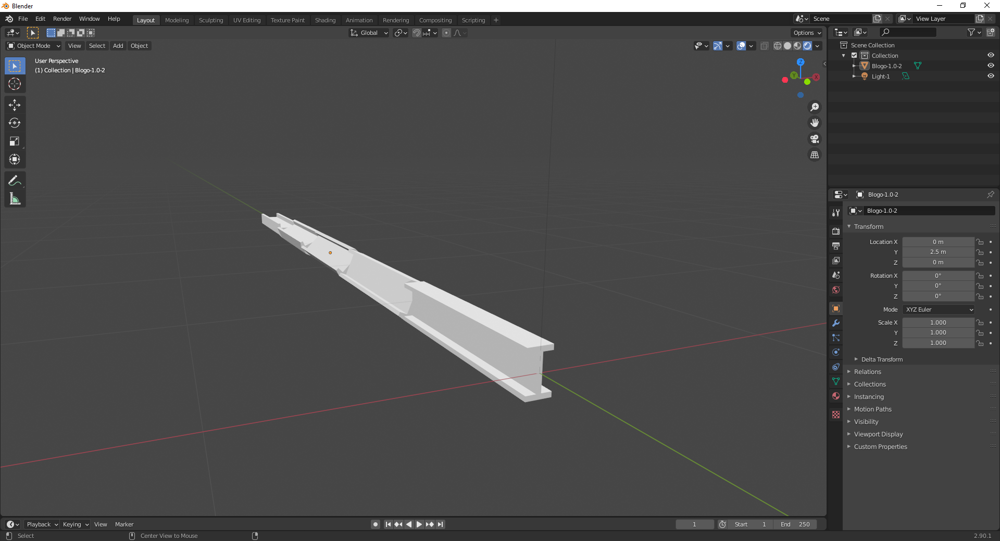Cross Section Adjustments¶
The cross section can be tilted (without affecting which way is up):
turtle.fd(5)
turtle.pen_up()
turtle.tilt_h(45)
turtle.fd(2)
turtle.pen_down()
turtle.fd(5)
turtle.pen_up()
turtle.tilt_h(-45)
turtle.tilt_v(45)
turtle.fd(2)
turtle.pen_down()
turtle.fd(5)
turtle.pen_up()
turtle.tilt_v(-45)
turtle.tilt_r(45)
turtle.fd(2)
turtle.pen_down()
turtle.fd(5)
gives:
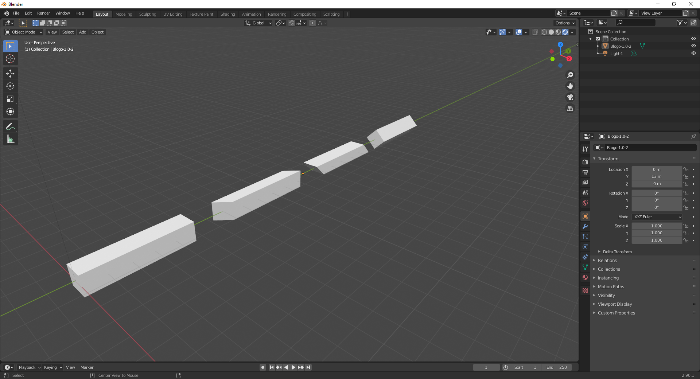Sideways¶
The cross section can be moved to the side without turning (note pen being up or down affecting the trail):
turtle.fd(2)
turtle.strafe(2)
turtle.fd(2)
turtle.pen_up()
turtle.strafe_v(2)
turtle.pen_down()
turtle.fd(2)
to give:
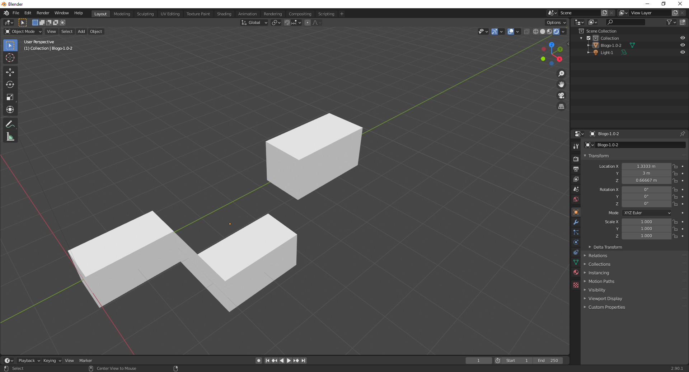Putting Together Turns¶
Many small turns can be put together to make a smooth surface:
for angle in range(360):
turtle.fd(0.1)
turtle.rt(1)
resulting in a circle:
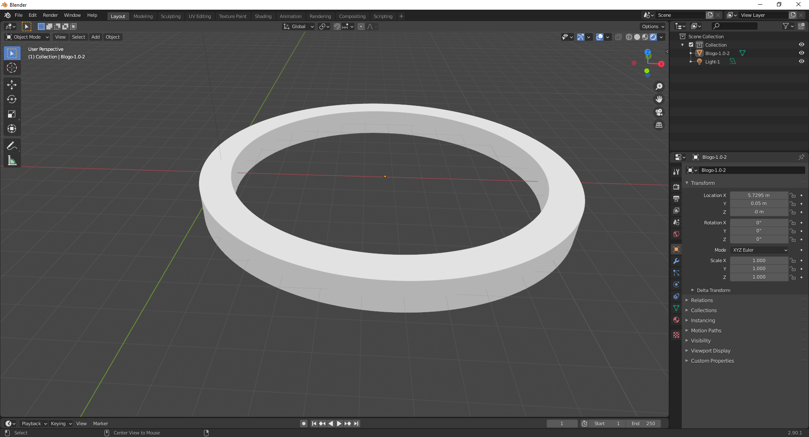Moving Around¶
The trails can also be created by absolute jumps:
for i in range(20):
turtle.set_pos((random.uniform(0, 10), random.uniform(0, 10), random.uniform(0, 10)))
turtle.fd(1)
for i in range(20):
turtle.pen_up()
turtle.set_xyz(-random.uniform(0, 10), -random.uniform(0, 10), -random.uniform(0, 10))
turtle.pen_down()
turtle.fd(1)
giving random blocks and lines:
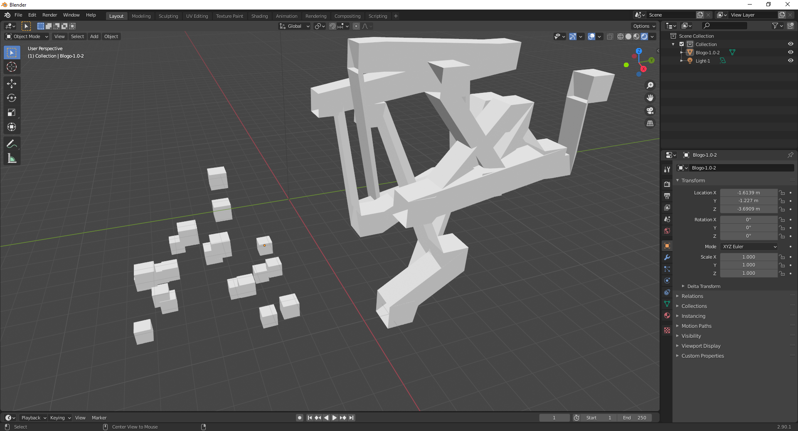Textures¶
It is very simple to add textures to objects, either by colour or as an image:
turtle.fd(2)
turtle.set_texture("red")
turtle.fd(2)
turtle.set_texture((0.25, 0.5, 1))
turtle.fd(2)
turtle.set_texture(os.path.abspath("./textures/grass.png"))
turtle.fd(2)
which looks like this:
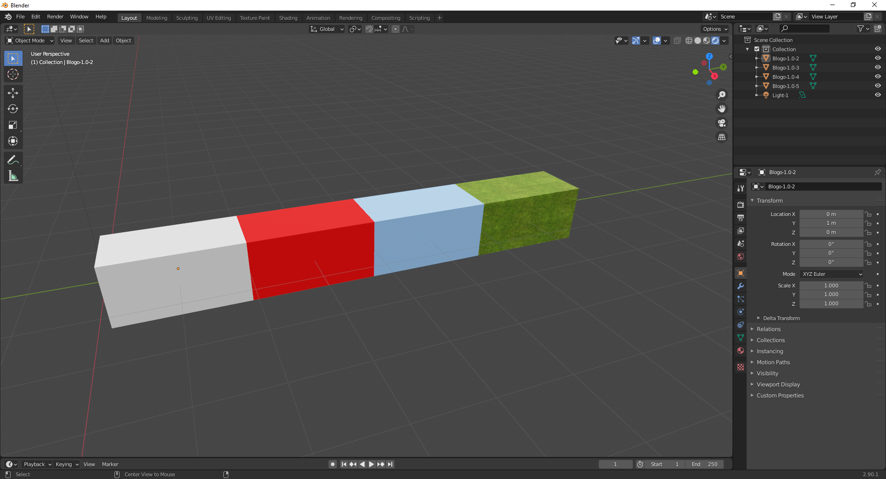Filling Areas¶
Shapes drawn can also be easily filled in:
turtle.set_texture("red")
turtle.fill(0.1, 0.2, "green", "relative")
turtle.fill(0.5, 0.9, "blue", "relative")
turtle.fd(10)
turtle.rt(90)
turtle.fd(10)
shows:
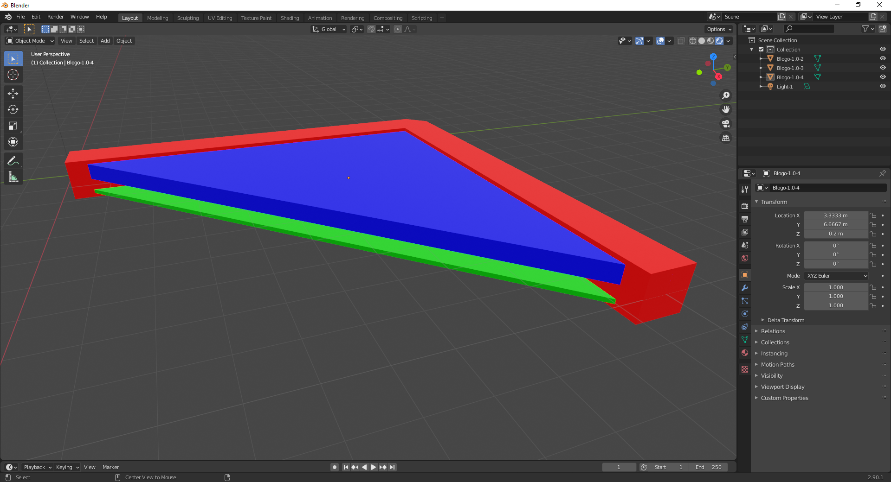Expanding the Cross Section¶
An important feature to be able to make complex shapes without having to manually enter a cross section is to be able to change the size of the cross section:
turtle.set_texture((random.random(), random.random(), random.random()))
turtle.fd(2)
turtle.set_width("left", 2)
turtle.set_texture((random.random(), random.random(), random.random()))
turtle.fd(2)
turtle.set_width("right", 2)
turtle.set_texture((random.random(), random.random(), random.random()))
turtle.fd(2)
turtle.set_width("above", 2)
turtle.set_texture((random.random(), random.random(), random.random()))
turtle.fd(2)
turtle.set_width("below", 2)
turtle.set_texture((random.random(), random.random(), random.random()))
turtle.fd(2)
turtle.set_width("sides", 3)
turtle.set_texture((random.random(), random.random(), random.random()))
turtle.fd(2)
turtle.set_width("verticals", 3)
turtle.set_texture((random.random(), random.random(), random.random()))
turtle.fd(2)
turtle.set_width("all", 4)
turtle.set_texture((random.random(), random.random(), random.random()))
turtle.fd(2)
which produces:
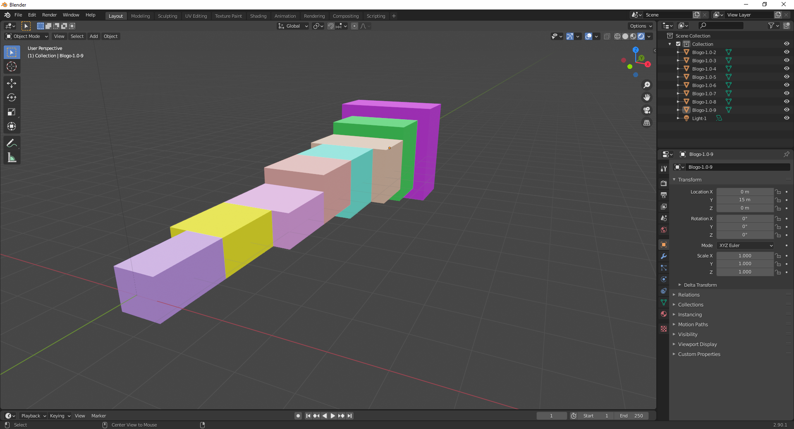Expanding the Cross Section More¶
As well as static size expansions, the width can be specified in a function. This allows complex shapes to be constructed with very little code. If we have two simple functions:
def height_func(args):
absolute_length_along = args["full_length"]
return int(absolute_length_along) % 2
def width_func(args):
relative_length_along = args["relative_length"]
return (4 * sin(relative_length_along * pi), "*")
These can be set to modify the square cross section:
turtle.add_width_func("above", height_func)
turtle.add_width_func("sides", width_func)
turtle.fd(20)
giving:
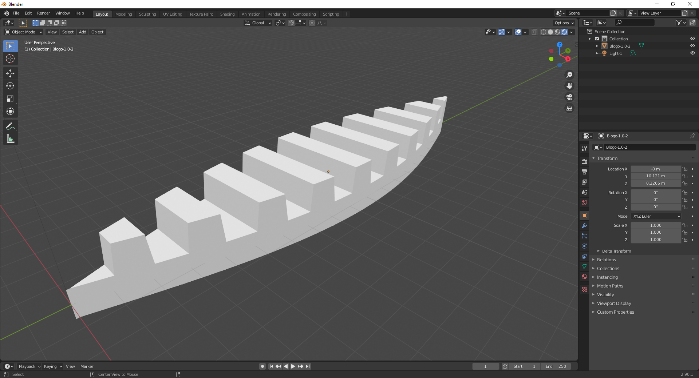There are also two built in width functions, which allow us to curve the two ends of a line in:
turtle.add_width_func("all", "curve_start", curve_length=0.1, eccentricity=0)
turtle.add_width_func("all", "curve_end", curve_length=0.1)
turtle.fd(10)
With the eccentricity value specifying whether the curve should be circular or just a straight line:
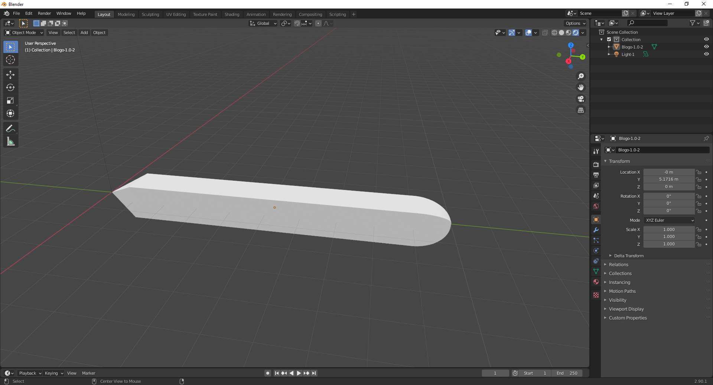And Beyond…¶
Putting all those concepts together allows for complex objects and structures to be built up. With the ability to tweak them and make changes simply.
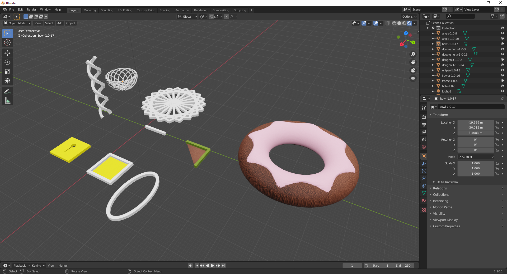 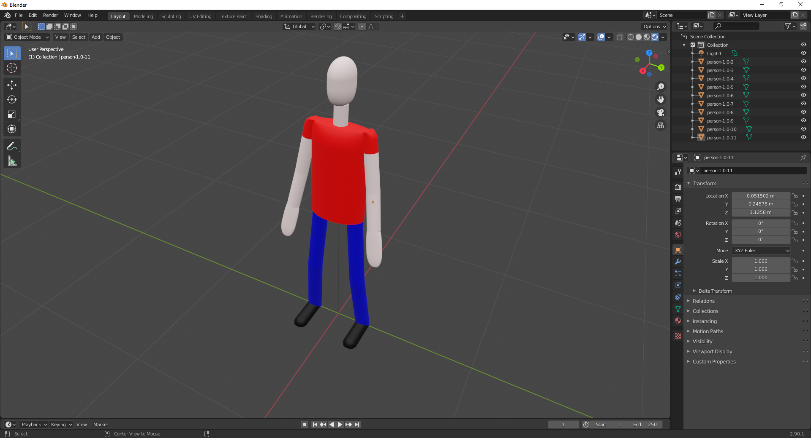 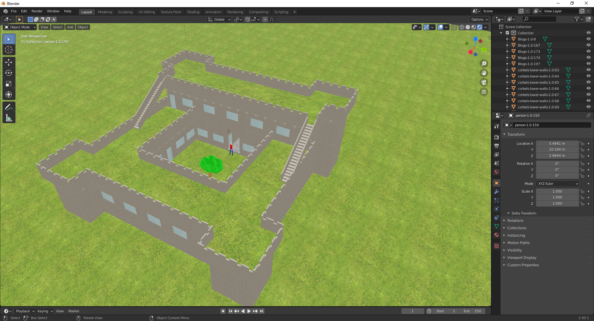 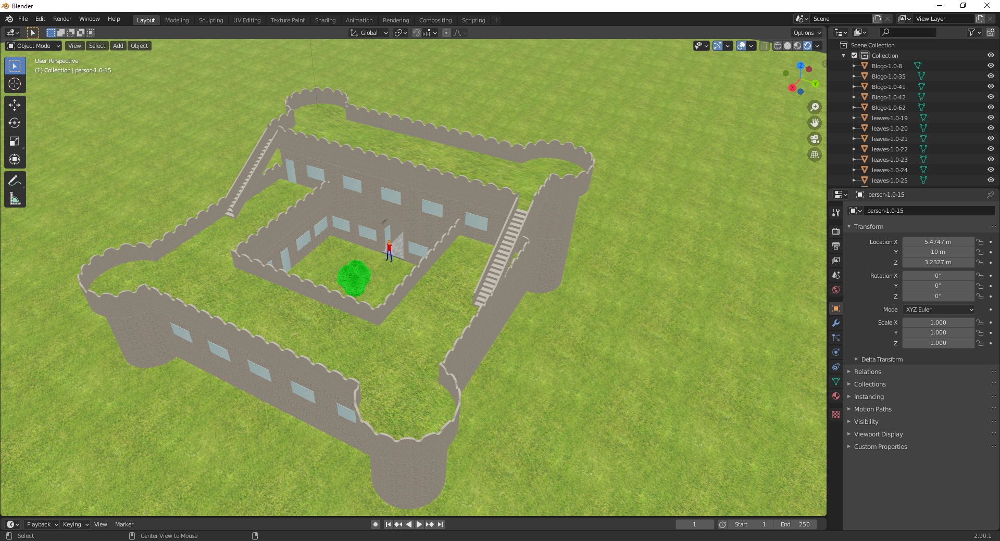 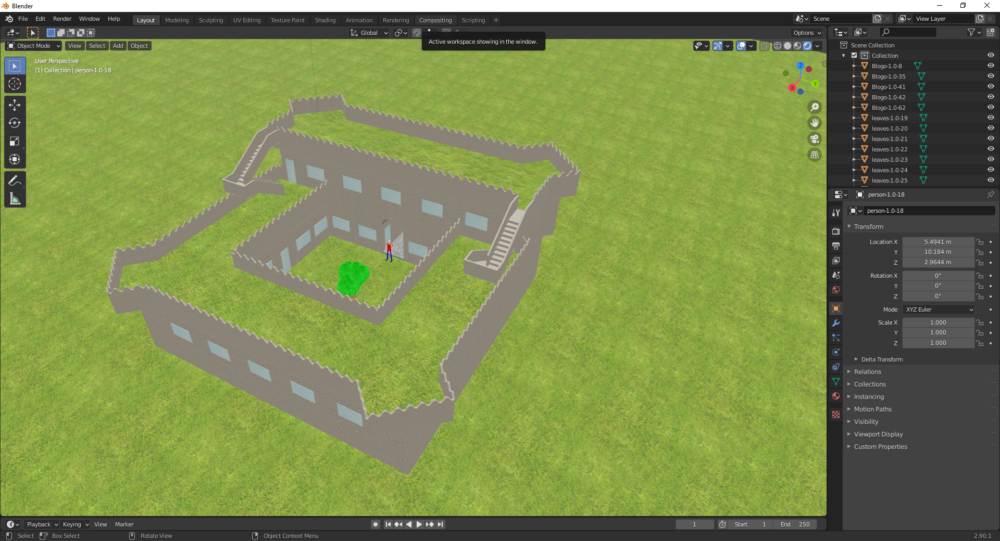